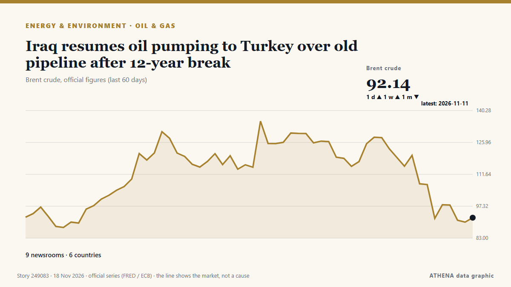

Ενέργεια, Πόροι & Περιβάλλον
ΧορηγούμενοΠαρουσιάζεται από  Cybernetics and Artificial Intelligence Lab Welcome to the Cybernetics and Artificial Intelligence Laboratory, established at the Department of Business Administration of the National and Kapodistrian University of Athens. The lab is headed by Professor Dimitrios Thomakos. The lab aims to do research that can be published in top venues. Our research uses tools and methods of Artificial Intelligence, and lies in the following areas: - Forecasting - Decision making - Cyber security - Finance We are always looking forward to collaborating with exceptional students!
Cybernetics and Artificial Intelligence Lab Welcome to the Cybernetics and Artificial Intelligence Laboratory, established at the Department of Business Administration of the National and Kapodistrian University of Athens. The lab is headed by Professor Dimitrios Thomakos. The lab aims to do research that can be published in top venues. Our research uses tools and methods of Artificial Intelligence, and lies in the following areas: - Forecasting - Decision making - Cyber security - Finance We are always looking forward to collaborating with exceptional students!
Οι τίτλοι των ειδήσεων παρουσιάζονται στα αγγλικά, όπως δημοσιεύτηκαν.

Πετρέλαιο & φυσικό αέριοIraq resumes oil pumping to Turkey over old pipeline after 12-year break
At the initial stage, the pipeline export capacity stands at 120,000 barrels per day. από TASS (English)
| 5 Νοε | 96 |
|---|---|
| 6 Νοε | 60 |
| 7 Νοε | 47 |
| 8 Νοε | 55 |
| 9 Νοε | 110 |
| 10 Νοε | 110 |
| 11 Νοε | 114 |
| 12 Νοε | 90 |
| 13 Νοε | 73 |
| 14 Νοε | 41 |
| 15 Νοε | 50 |
| 16 Νοε | 98 |
| 17 Νοε | 56 |
| 18 Νοε | 8 |
Nepal flood victims' families may wait up to a year for death certificates
KUALA LUMPUR: Families of Malaysians missing in the Nepal floods could face another three to 12 months, or longer, to obtain certificates of presumption of death, Malaysia Solidarity Families in Hope… από New Straits Times
Amazon To Invest $7 Billion In Renewable Projects In India By 2030
Amazon said the planned spending would help reduce the "carbon intensity of electricity powering its operations" in the world's most populous nation. από NDTV
Oil slips as recovering Mideast exports blunt Gulf tensions
Brent crude futures drop 78 cents, or 0.8%, to $91.66 a barrel. από Express Tribune
‘Zero transparency’: Inside Trump’s plans for Venezuela’s oil money
Democrats say they plan to investigate Trump's dealings with Venezuela after winning control of Congress. από Al Jazeera English
Liberia Calls for Stronger Climate Support in Meeting with UN Secretary-General at COP31
ANTALYA, Türkiye – Liberia has called for stronger international support to protect its forests and vulnerable coastal communities, warning that countries contributing little to climate change should… από FrontPage Africa
Japan's 1st ammonia-carrying ship also run on ammonia unveiled
Major Japanese shipping company Nippon Yusen K.K. unveiled Tuesday Japan's first ammonia carrier that is also powered by ammonia, as. από Mainichi (English)
OceanScore takes on responsibility for RightShip’s emissions portal customer portfolio
OceanScore is expanding its footprint in the global ports sector through its agreement to take over responsibility for the customer base of RightShip’s Maritime Emissions Portal (MEP). από Ship.Energy
Global solar PV additions to fall in 2026 for first time since 2018, forecasts GlobalData
Solar PV remained the world’s fastest-growing source of power in 2025, with record annual additions rising 17.5% year-on-year. από Cyprus Shipping News
Panama, First Quantum launch formal Cobre Panama talks
Negotiations over restarting the shuttered copper mine will focus on economic benefits, environmental safeguards and jobs. από MINING.COM
PACNEWS TWO, 18 NOVEMBER 2026
In this bulletin: 1. PACIFIC — Pacific-backed fossil fuel transition langugae must survive COP31: Bowen2. από Islands Business (Fiji)
Iraq launches large-scale investigation into oil smuggling
Shafaq News- Baghdad Iraq's Federal Integrity Commission (CoI) recorded 228 criminal cases and reports involving suspected oil smuggling between 2024 and 2026, the commission said on Sunday. από Shafaq News (English)
US flexes climate action muscle at COP31 despite Trump no-show
The US government is snubbing UN climate talks in Turkey. από DW English
Wildlife protection must be part of climate action, campaigners tell COP31
Conservationists on Tuesday urged countries at the COP31 climate summit to include wildlife protection in climate negotiations, saying wild animals play a key role in maintaining carbon-storing… από Turkish Minute
Japan proposes ‘Asian IEA’ to manage oil stockpiles
Tokyo hopes joint reserves would insulate import-dependent region against future energy shocks. από Financial Times - Markets
COP31 draft deal calls for ‘accelerated action’ to exit fossil fuels
Draft urges countries to raise electricity's share of final energy demand to 35% by 2035. από Express Tribune
UN climate chief warns of AI 'double-edged sword' at COP31
ANTALYA, Turkey (AFP) -- The UN's climate chief highlighted the "great potential and great peril" of artificial intelligence in the battle against global warming on Monday as COP31 host Turkey… από Korea Herald
Costa Rica and Its Neighbours in Central America Explained
Costa Rica shares borders with Nicaragua and Panama; the guide covers the San Juan River dispute, migration, CAFTA-DR trade, security and US ties. από The Rio Times
Everllence secures first order for methane dual-fuel 8S50ME-GI Mk10.7 engine
Everllence has announced it has won the first order for its methane dual-fuel, two-stroke 8S50ME-GI Mk10.7 engine configuration. από Bunkerspot
Guinea jails 200 in wildcat gold mining crackdown
A Conakry court has jailed 22 former local officials from the gold-rich northeastern Siguiri region, as well as 200 people accused of illegal mining. από DW English
Malaysia loosens rare earths curbs for France amid upgrade of ties to strategic partnership
The countries will cooperate in areas of defence, trade, energy transition and critical minerals. από The Business Times
ExxonMobil begins oil production at Uaru in Guyana’s Stabroek block
ExxonMobil, via its subsidiary ExxonMobil Guyana, has commenced oil production at Uaru, the fifth development in Guyana’s offshore Stabroek block. από Offshore Technology
French Development Agency Eyes Fresh Investments in Uganda, Targets Water, Energy and Jobs
With more than €1.2 billion committed to Uganda over nearly three decades, AFD is exploring further investments in infrastructure, renewable energy, agricultural value addition and affordable… από Nile Post
Travlos criticises EU stance on shipping decarbonisation talks, warns of fresh IMO deadlock
The president of the Union of Greek Shipowners (UGS), Melina Travlos, has criticised the European Union’s approach to negotiations on shipping decarbonisation, warning of the risk of a fresh… από Naftemporiki (English)
Hyperscale data centers use 2% of US electricity
Study attempts to tally hyperscalers’ energy use and emissions. από Ars Technica
Oil prices fall on expectations of coming supply surplus
Oil prices fell on Monday on expectations of a supply surplus as shipments from the Middle East through the Strait of Hormuz have nearly returned to pre-war levels and the US took steps to support… από MyJoyOnline
Absent officially, unofficially ‘America is all in’ at COP31
ANTALYA, Turkey: The United States officially is absent from COP31. από Oman Observer
Food stockpiling eyed amid El Niño, other crises
MANILA, Philippines — The Philippines plans to propose a regional mechanism for stockpiling food and staple grains, as Southeast Asia braces for the impact of crises, including a potentially severe… από Philippine Daily Inquirer
Scottish Tories urge Burnham to ‘ignore the growing noise’ and back Rosebank
Reports suggest up to 100 Labour MPs are against the approval of the oil field. από The Irish News (Belfast)
Laguna Job Fair offers 4,607 vacancies
Twenty-nine employers join DOLE-led recruitment drive in Los Baños, with applicants securing on-the-spot employment. από Daily Tribune
U.S. crude oil declines to $85 a barrel on recovering Middle East exports
Oil prices are falling as forecasts project a surplus in oil in the fourth quarter. από CNBC World
China Turns to Iraqi Oil as US Blockade Disrupts Iranian Supplies
BEIJING, Nov 16 : Chinese independent oil refiners are increasingly turning to Iraqi crude to replace Iranian supplies disrupted by the US naval blockade of Iran, while rising pric... από Arab Times
Dangote Sinotruk rolls out first locally assembled electric trucks
[This Day] Dangote Sinotruk West Africa Limited has rolled out Nigeria's first locally assembled heavy-duty electric truck, marking a historic milestone in the country's automotive industry and… από AllAfrica
Pope Leo urges stop to Amazon deforestation, decries ‘murders’ of tribal leaders
PUCALLPA, Peru, Nov 15 - Pope Leo on Sunday forcefully condemned what he called the exploitation of the Amazon jungle and urged Catholics to oppose \"with perseverance\" the deforestation and… από The Straits Times
Iran’s proxy in Iraq rakes in hundreds of millions through oil smuggling
The smuggling, carried out with accomplices among some security and oil officials, has robbed the government of hundreds of millions of dollars dating back to 2021. από The Straits Times